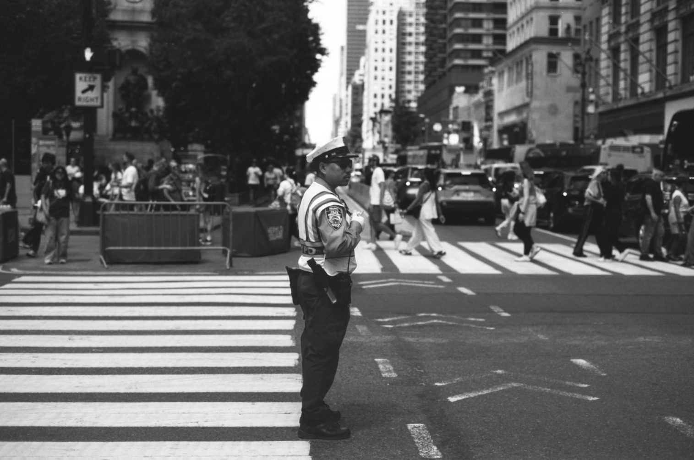
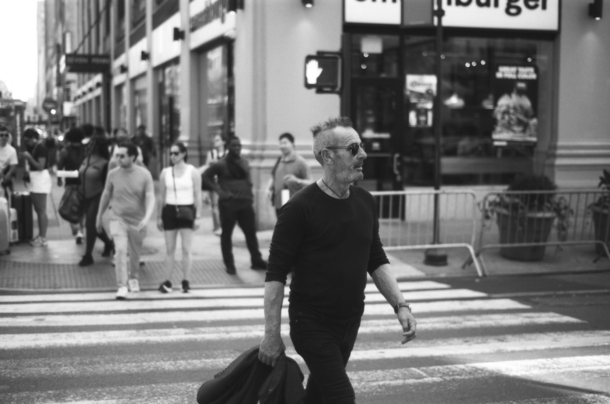
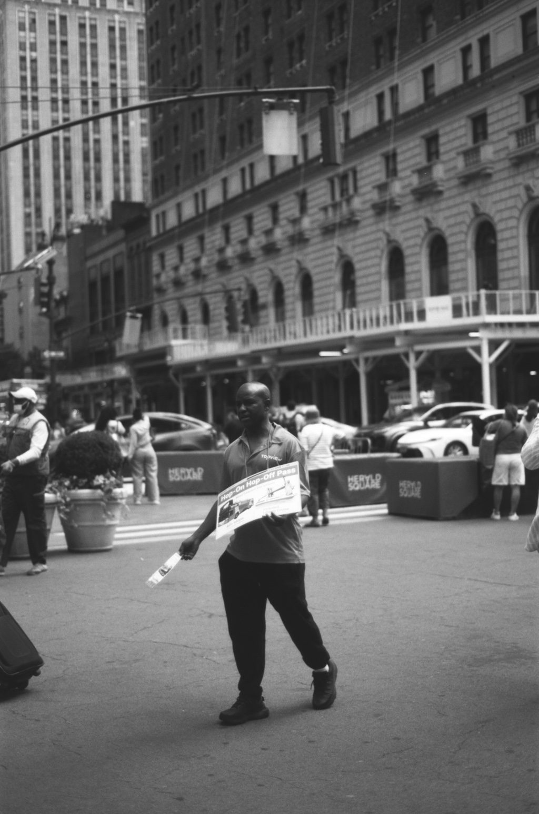
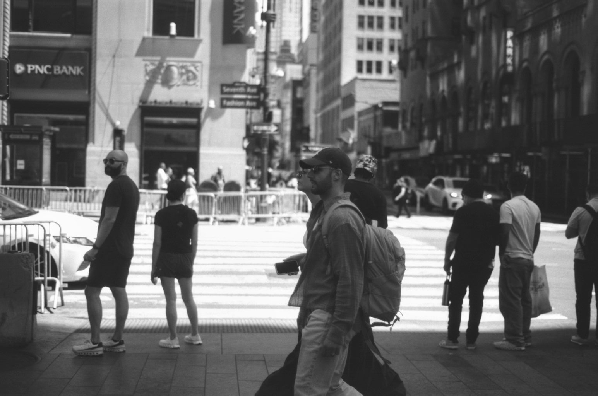
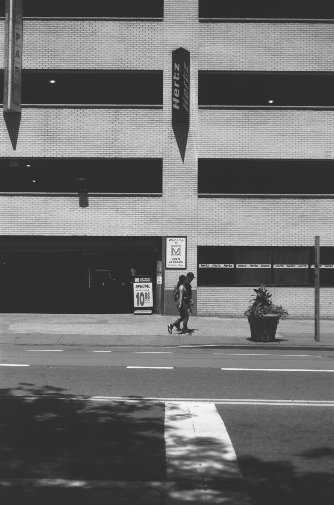
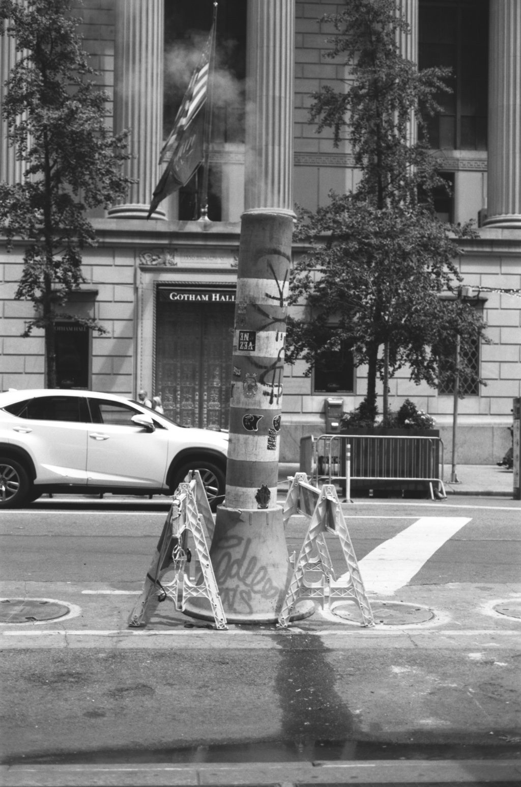
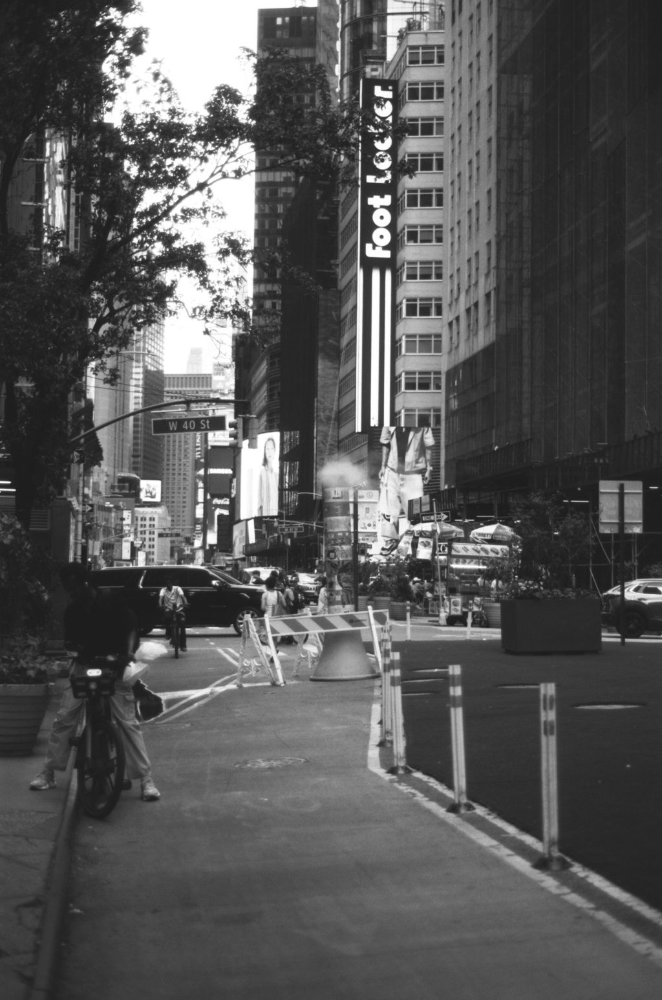
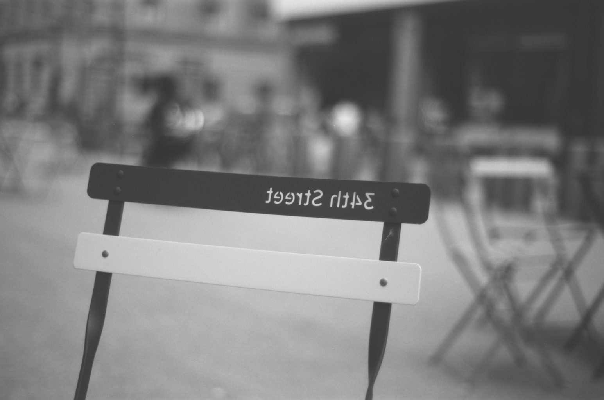

← Film
03 / 07
Thirty-Fourth Street
One black-and-white roll around Herald Square and Penn Station in high summer: traffic agents, tourists, hawkers and shoppers, from the Macy's clock to a folding chair on 34th Street.
-
01 / 12 -

02 / 12 -

03 / 12 -
04 / 12 -

05 / 12 -

06 / 12 -

07 / 12 -

08 / 12 
09 / 12 -
10 / 12 
11 / 12 -

12 / 12